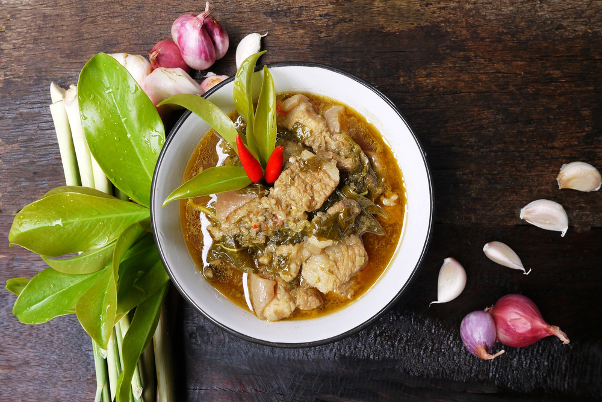
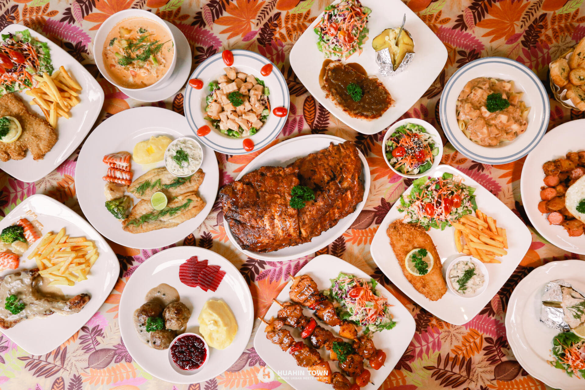
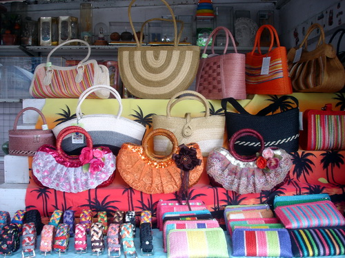

อาหารและของฝาก
ชิมเมนูอร่อยประจำถิ่นและเลือกซื้อของฝากจากชุมชน
อาหารพื้นถิ่น

แนะนำเมนูเด่นของชุมชน พร้อมบอกว่าหาซื้อได้ที่ไหน ปรุงสดใหม่ด้วยวัตถุดิบท้องถิ่นและสูตรดั้งเดิมของคนในพื้นที่
- สำรับอาหารพื้นบ้านประจำถิ่น — หาซื้อได้ที่ตลาดชุมชนและร้านอาหารท้องถิ่น
- ขนมหวานและเครื่องดื่มสมุนไพร — เหมาะสำหรับเติมพลังระหว่างเดินเที่ยว
เมนูแนะนำและจุดแวะชิม

รวมจานเด็ดและของว่างยอดนิยมที่นักท่องเที่ยวนิยมแวะชิมเมื่อมาเยือนชุมชน
ของฝากจากชุมชน

แนะนำผลิตภัณฑ์ท้องถิ่นและจุดจำหน่ายที่ผู้เดินทางแวะได้ ช่วยสนับสนุนรายได้ให้แก่กลุ่มอาชีพในชุมชน
- ผลไม้ตามฤดูกาลและสินค้าแปรรูป — จำหน่ายที่จุดจำหน่ายของฝากชุมชน
- งานหัตถกรรมและเครื่องจักสาน — ผลิตโดยกลุ่มแม่บ้านและช่างฝีมือในท้องถิ่น